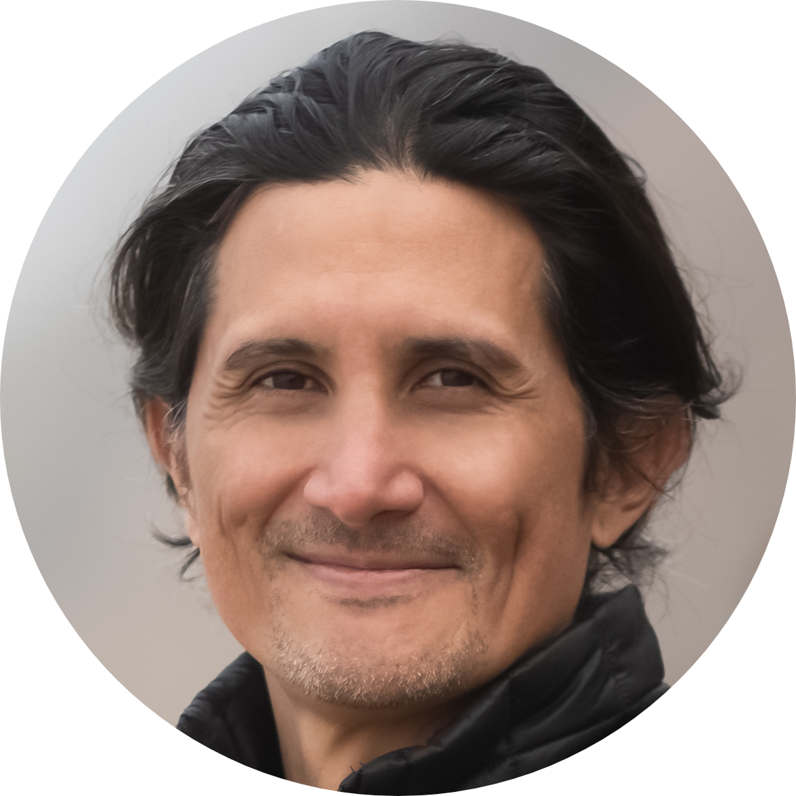

|  |
William FayetteSoftware Engineer Contact |
I am a full stack software engineer that utilizes HTML, CSS, Javascript, Python, NodeJS, and React. I have worked in the audio/visual industry and commissioned new builds contracted by Google, Facebook, Square and other tech companies. I am a team builder with strong soft skills that effectively communicates innovative ideas.
| Javascript | ⭐️⭐️⭐️⭐️⭐️ |
| React | ⭐️⭐️⭐️⭐️⭐️ |
Javascript, Python, SQL, HTML, CSS, React, Redux, Bootstrap, AJAX, XML/JSON, Jinja, NodeJS, ExpressJS, MySQL, PostgreSQL, Amazon Web Service, Google Cloud, Git, Github, Heroku
| Dates | Work |
|---|---|
| 2020 - Current | Software Engineer Fellow at Springboard |
| 2019 - 2020 | AV Engineer at Rahi Systems |
| 2012 - 2019 | Freelance Web Developer |
Springboard Oct. 2020 - Current
Software Engineer Fellow
800+ hour hands-on curriculum with 1:1 industry expert mentor oversight, and completion of 2 portfolio projects.
Mastered skills in front-end web development, back-end web development, databases, and data structures and
algorithms.
Capstone 1: A Web App that retrieves a hashtag currently trending on Twitter.
Hashtag Suggestion App
Capstone 2: Lyric finder web app
Rahi Systems, San Francisco Aug. 2019 - Oct. 2020 Audio Visual Technician
Installed AV equipment, built assembly racks in IDF and all hands rooms to facilitate ease of communication
with
office operations.
Pulled, terminated, tested, and labeled field cabling to the correct locations to connect audio/visual
devices.
Freelance, San Francisco/Hawaii Feb. 2012 - Aug. 2019 Website Design/Developer & Podcast Producer
Designed and developed responsive custom websites using HTML, CSS, Wordpress, and Squarespace for contracted
clients.
Maintained websites and updated content as per clients request.
Implemented SEO optimization to enhance website traffic.
Edited, uploaded and published recorded content to iTunes, Spotify and Sticher for podcast. Recent
website/podcast development: www.walkingdharma.com
Springboard Software Engineering Career Track, Certification · Oct. 2020 - Current
9 month intensive course in Software Engineering methodologies and technologies.
SAE Institute North America
Audio Technology Diploma 2005
12 month course specializing in audio and video production.
Cisco & Zoom Certification
Cicsco & Zoom Certifications 2020 Trainings for certified technology specialist.